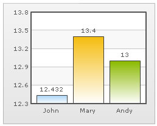
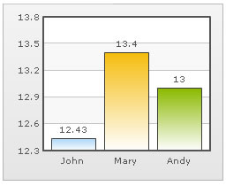
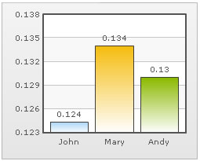
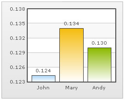
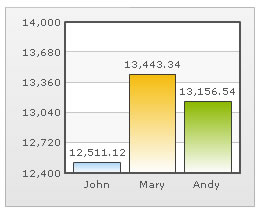
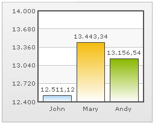
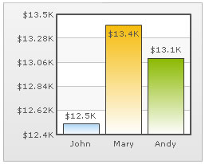
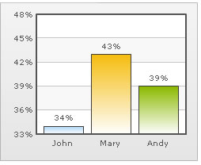

FusionCharts v3 offers you a lot of options to format your numbers on the chart. From number prefixes and suffixes to controlling the decimal places to scaling your numbers based on a pre-defined scale, FusionCharts lets you do it all. In this section, we'll see the number formatting properties supported by FusionCharts and look into number scaling in the next section.
We'll start with setting decimal precisions for the numbers on chart.
All the charts in FusionCharts v3 support the attribute decimals. This single attribute lets you control the decimal precision of all the numbers on the chart. Using this attribute, you can globally set the number of decimal places of ALL numbers of the chart. For e.g., if you have numbers on your chart as 12.432, 13.4 and 13 and you set <chart ... decimals='2' >, the numbers would be converted to 12.43, 13.4 and 13 respectively.
 |
 |
Chart without any decimal formatting applied |
With decimals set to 2 (see the first column value) |
Similarly, if you had data as 0.12342, 0.134 and 0.13, and you set decimals as 3, FusionCharts would output 0.124, 0.134 and 0.13 respectively. Note that even though we've set decimals to 3, FusionCharts now doesn't forcibly add the 0 padding to 0.13 to form 0.130, as the trailing 0 is un-necessary.
However, if you want your numbers on the chart to have trailing zeroes too, you can set <chart ... forceDecimals='1' > and now the numbers would show as 0.124, 0.134 and 0.130 respectively. Shown below are examples:
 |
 |
Trailing zeroes missing in last column's value. |
Forcing trailing zeroes by setting forceDecimals='1' |

In the above image, the data for chart is 12500, 13400 and 13300. FusionCharts automatically formats the number scaling to convert to K (Thousands) & M (Millions). If you do not wish to truncate numbers in this manner, just use:
<chart formatNumberScale='0'..>
When you now view the chart, you'll get the following output:
You can see above that FusionCharts is now showing full numbers on the chart. It has also added commas to the numbers at the required places. If you do not need the commas too, set formatNumber=0. But, setting formatNumber=0 wouldn't format any decimal places too (even if explicitly specified in XML).
Shown below is an example with <chart ... formatNumber='0' formatNumberScale='0' ..> :
By default, FusionCharts uses . (dot) as decimal separator and , (comma) as thousand separator character. However, you can customize this character depending on your requirements.
To do so, use the decimalSeparator and thousandSeparator attribute. For example, let's set our thousands separator as dot and decimal separator as comma. To do so, you'll have to use the following xml:
<chart ... decimalSeparator=',' thousandSeparator='.' >
Shown below is the output.
 |
 |
Chart with default decimal and thousand separator. FusionCharts by default separates thousands using commas and decimals using dots. |
Chart with swapped decimal and thousands separator character. |
FusionCharts allows you to add a prefix or suffix to all numbers on the chart. You can use the following attributes of <chart> element to attain the same:
- numberPrefix="$" : Using this attribute, you could add prefix to all the numbers visible on the graph. For example, to represent all dollars figure on the chart, you could specify this attribute to ' $' to show like $40000, $50000.
- numberSuffix="p.a" : Using this attribute, you could add a suffix to all the numbers visible on the graph. For example, to represent all figure quantified as per annum on the chart, you could specify this attribute to ' /a' to show like 40000/a, 50000/a.
If you intend to use special characters for numberPrefix or numberSuffix, you'll need to URL Encode them when using dataXML method. For example, if you wish to have numberSuffix as % (like 30%), you'll need to specify it as under:
numberSuffix='%25'
In dataURL method, you can directly specify the character.
Examples:
 |
 |
Number Prefix set as $ for the chart |
Number Suffix Set as % |
If you've opted to manually set the number of divisional lines on chart, you can also control the decimals of y-axis values separately. For example, consider the following XML and chart:
<chart yAxisMinValue='115' yAxisMaxValue='140' adjustDiv='0' numDivLines='3' >
<set label='John' value='125' />
<set label='Mary' value='134' />
<set label='Andy' value='131' />
</chart>
The chart for this XML looks as under:
In this chart, we've manually fixed the chart lower limit, upper limit and number of divisional lines. We've also asked FusionCharts not to automatically adjust divisional lines. Now, if you see the chart, you'll find that FusionCharts has truncated decimals from y-axis values, as it couldn't find any other decimal values on the chart.
You can, however, opt to just show decimals on y-axis values in this case (when adjustDiv is false) using yAxisValueDecimals attribute. e.g., <chart yAxisMinValue='115' yAxisMaxValue='140' adjustDiv='0' numDivLines='3' yAxisValueDecimals='2' decimals='0' >.
When you now see the chart, you'll get 2 decimal places on y-axis values. But, the other numbers on chart would still have 0 decimal places.
Note that forceDecimals doesn't work in this mode.
Next, we'll see how to utilize the new number scale formatting properties provided in FusionCharts v3.